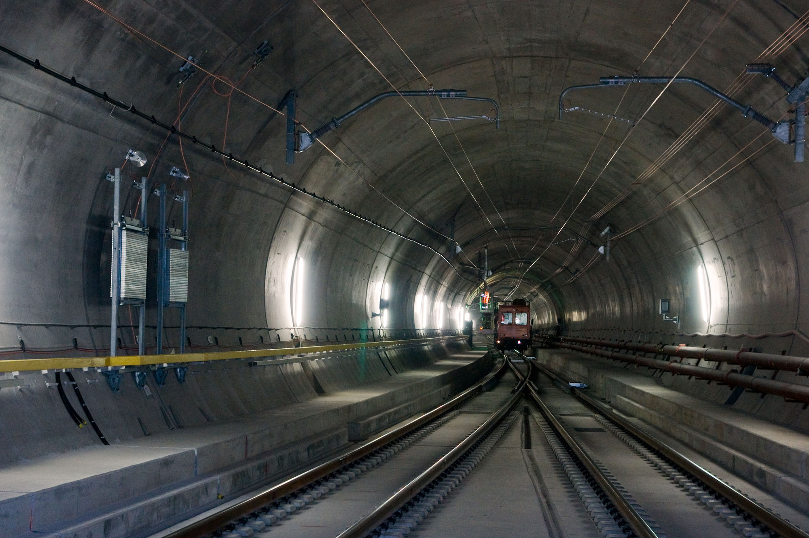

Podstawowe informacje
- Długość: 57,1 km
- Rok otwarcia: 2016
- Rodzaj: tunel kolejowy
Gotthard Base Tunnel to najdłuższy i najgłębszy tunel kolejowy świata. Przebiega pod Alpami Szwajcarskimi i łączy północ z południem Europy, znacznie skracając czas przejazdu przez Alpy.